Trang chủ / Chuyên đề 7: Hồ Sơ Các Chủng Tộc / Kỳ 68
Chuyên đề 7 · Kỳ 68 / 90
PHÂN LOẠI CHỦNG TỘC XÁM (GREYS) & ROBOT SINH HỌC

Kỳ này trình bày hồ sơ sinh học của 12 chủng tộc thuộc khu vực Phân Loại Chủng Tộc Xám (Greys) & Robot Sinh Học. Mỗi hồ sơ gồm hình dáng, chiều cao, đặc điểm sinh học – giác quan, và vai trò trong bức tranh thiên hà.
Solipsi Rai (Hành tinh Aama — Cygnus)
- Hình dáng & Chiều cao: Cao 1,0m – 1,2m; da xám nhạt bóng mịn, hộp sọ to, mắt to đen. Cánh tay 3-4 ngón. Không tai ngoài.
- Đặc điểm Sinh học & Giác quan: Sinh sản nhân bản. Nền văn minh 2 tỷ năm tuổi.
- Đặc tính & Vai trò Thiên hà: Hòa bình nguyên thủy; nhánh ly khai bị Orion nô dịch.
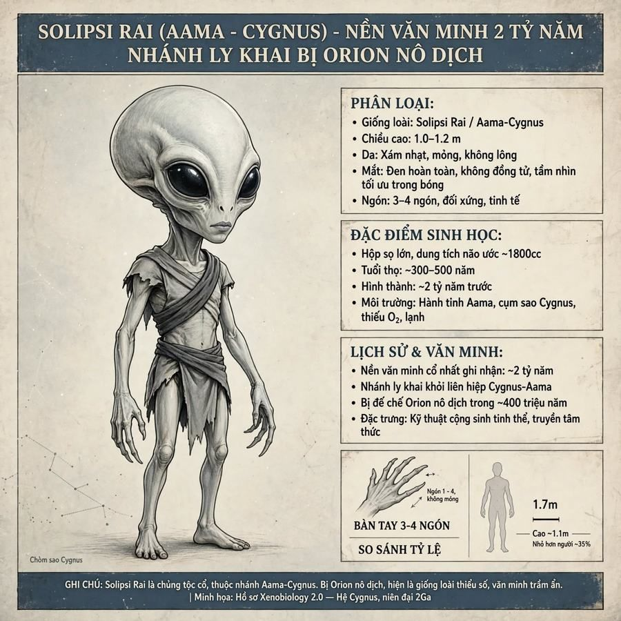
Do-Hu / Dow (Hành tinh Elderan — Zeta Reticuli M-2)
- Hình dáng & Chiều cao: Cao 1,1m – 1,3m; da nâu/xanh nhạt; hốc hác, cổ dài; tay chân 4 ngón.
- Đặc điểm Sinh học & Giác quan: Đồng hóa hoàn toàn vào ma trận AI Tổ Ôm (Hive Mind).
- Đặc tính & Vai trò Thiên hà: Tiêu cực; phục vụ chiến dịch Orion.
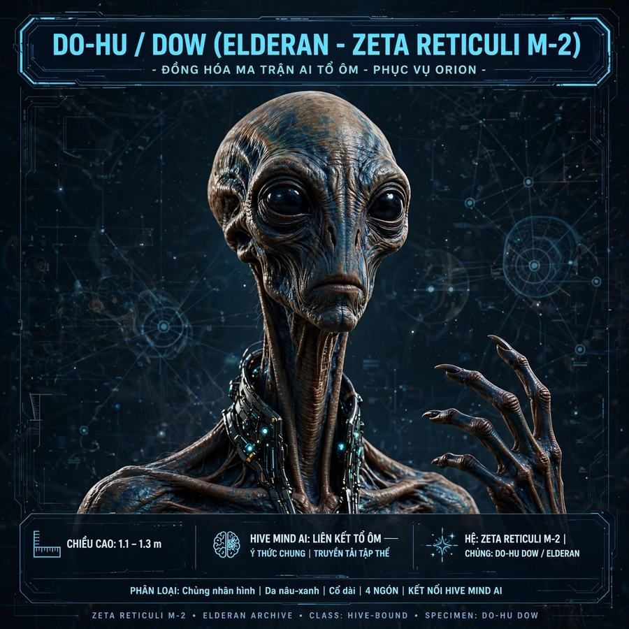
Eben / Ebeni (Zeta Reticuli Peaceful)
- Hình dáng & Chiều cao: Cao 1,1m – 1,3m; da nâu/xanh nhạt, mắt to đen hình bầu dục.
- Đặc điểm Sinh học & Giác quan: Thuần sinh học, không mang DNA Bò sát. Thích mặc trang phục xanh lam.
- Đặc tính & Vai trò Thiên hà: Hòa bình; tò mò nghiên cứu khoa học.
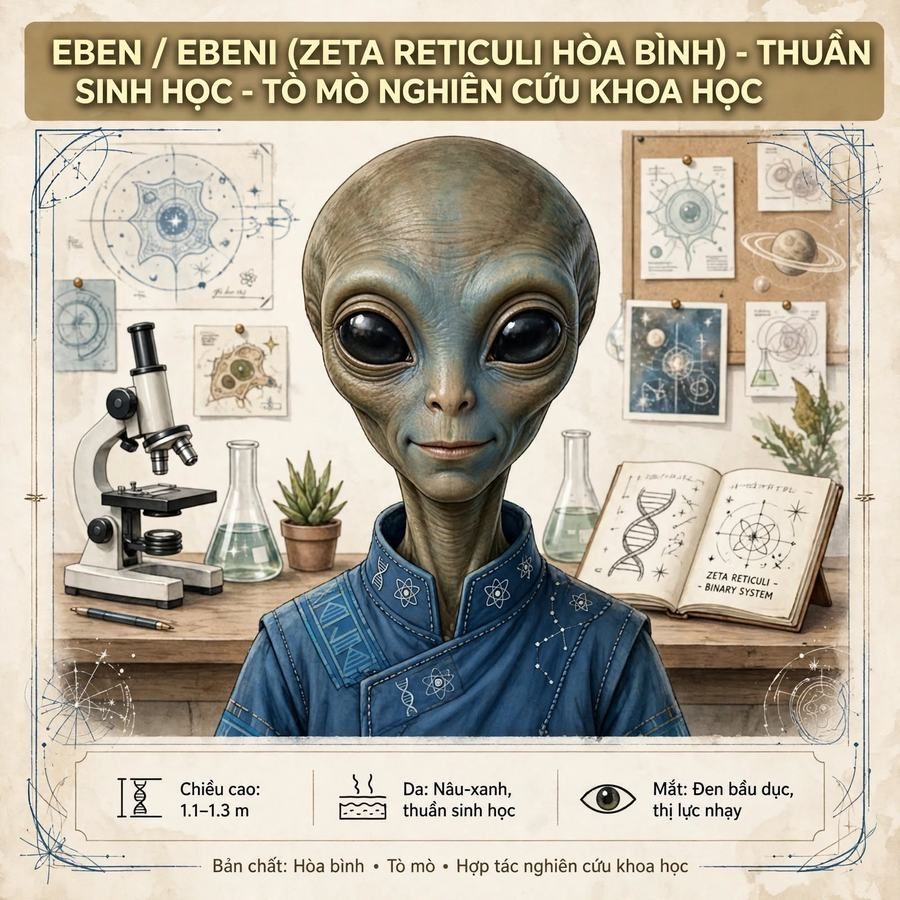
Eban (Beta Orionis — High Greys)
- Hình dáng & Chiều cao: Cao 2,1m – 2,5m; da xám sẫm, mắt to đen sâu thẳm.
- Đặc điểm Sinh học & Giác quan: Mật độ năng lượng thần kinh mạnh.
- Đặc tính & Vai trò Thiên hà: Tiêu cực; quản lý cấp cao Orion, thực hiện bẻ khóa linh hồn tại căn cứ ngầm DUMB.
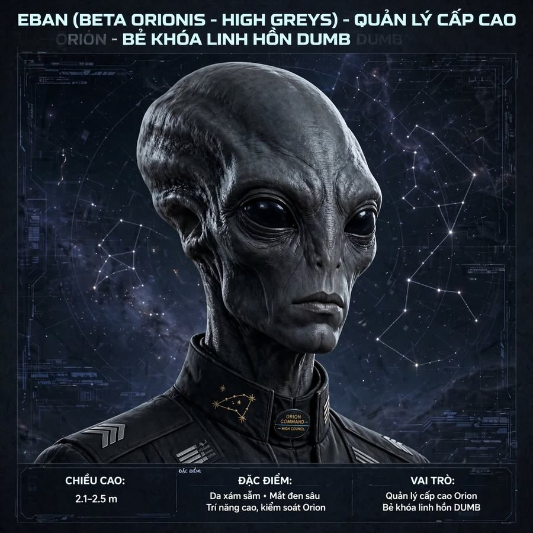
Grail (Rigel & Mintaka — Saurian Greys)
- Hình dáng & Chiều cao: Cao >2,4m; da xám vảy saurian, tứ chi mảnh nhưng lực điện từ mạnh.
- Đặc điểm Sinh học & Giác quan: Tàu mạ crôm bóng.
- Đặc tính & Vai trò Thiên hà: Tiêu cực/Rất hung dữ; cưỡng chế biến đổi gen.
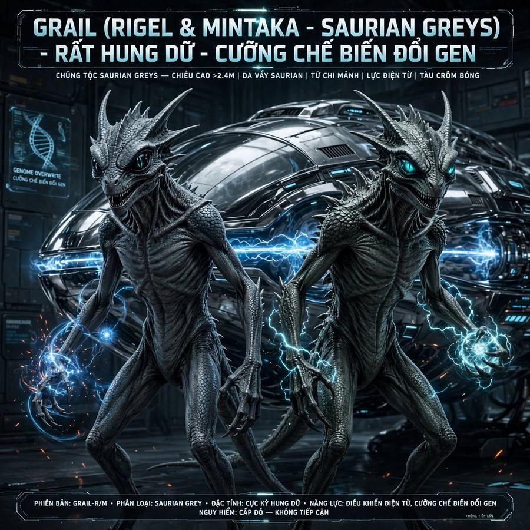
Graysli (Porrima — Gamma Virgo)
- Hình dáng & Chiều cao: Cao 1,6m – 1,8m; làn da bao phủ bởi lớp lông tơ mềm màu trắng/xám nhạt.
- Đặc điểm Sinh học & Giác quan: Lưỡng tính, đeo kính đen bảo vệ.
- Đặc tính & Vai trò Thiên hà: Hòa bình; tò mò khoa học, không bắt cóc con người.
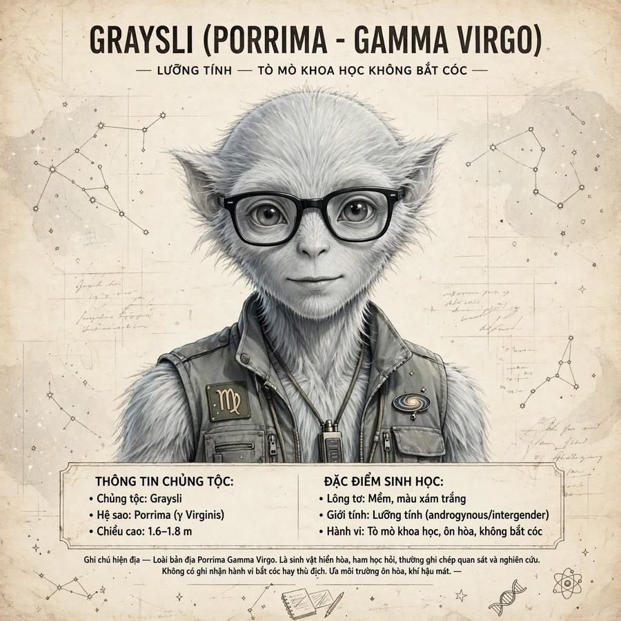
Dorsay / Dursa-y (Ottora & Endelemen-Nyada — Cassiopeia)
- Hình dáng & Chiều cao: Cao 1,2m – 1,6m; khuôn mặt giống dơi (bat-like face), mắt to đen.
- Đặc điểm Sinh học & Giác quan: Nền văn minh 4 tỷ năm tuổi.
- Đặc tính & Vai trò Thiên hà: Hòa bình; thành viên GFW, ghé thăm Trái Đất hơn 250 lần.
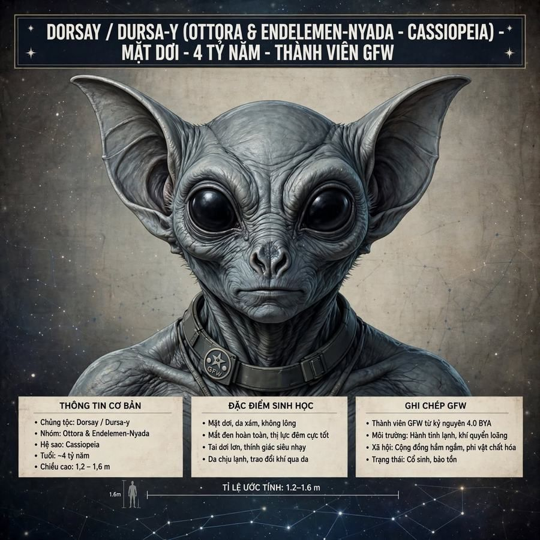
Ainanna (Chòm sao Gemini)
- Hình dáng & Chiều cao: Cao 1,1m – 1,3m; da xám.
- Đặc điểm Sinh học & Giác quan: Tàu kim loại đen bầu dục/chữ nhật có đèn vàng viền.
- Đặc tính & Vai trò Thiên hà: Tiêu cực; hoạt động tại Dulce, đổi công nghệ lấy mẫu sinh học con người.
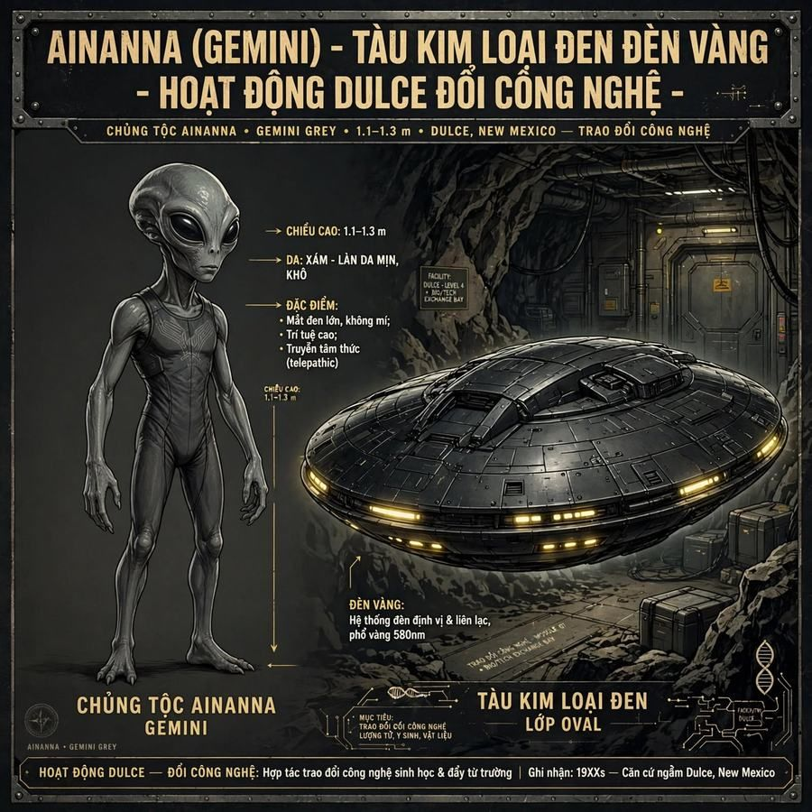
Moovianthan Kay Phixaka (Vulpecula / Phykxa)
- Hình dáng & Chiều cao: Xám nhỏ với đôi mắt sâu hốc (hollow eyes).
- Đặc điểm Sinh học & Giác quan: Du hành xuyên chiều.
- Đặc tính & Vai trò Thiên hà: Trung lập; có căn cứ dưới dãy Himalaya.
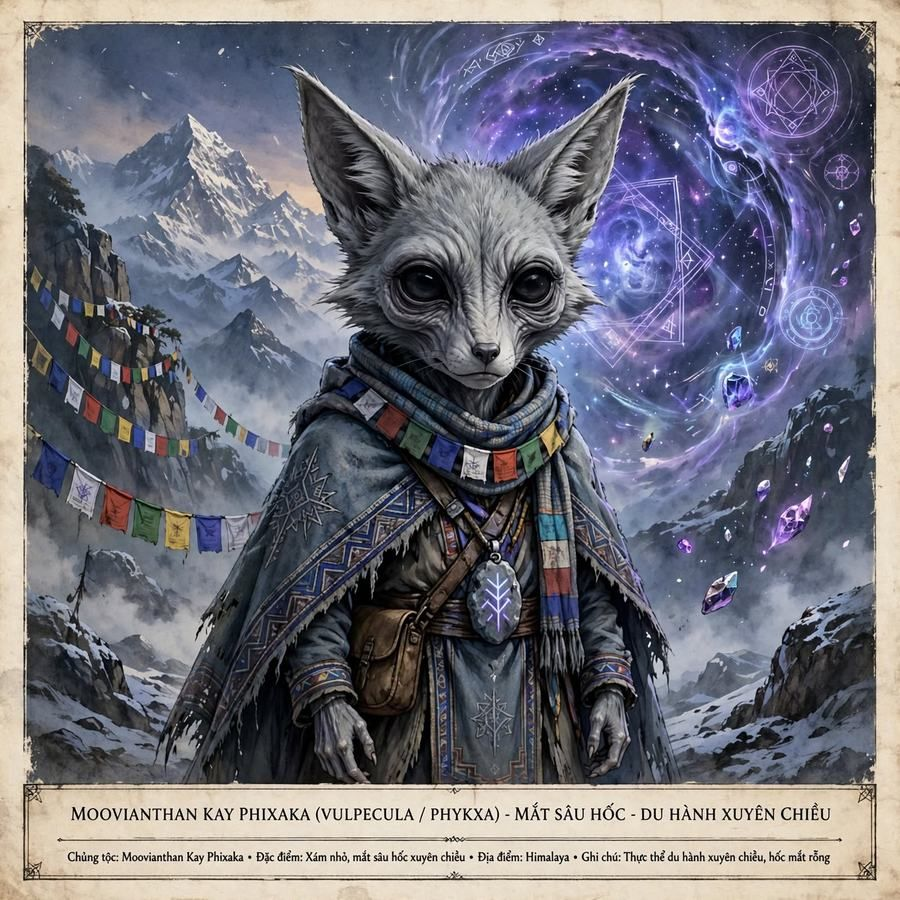
Xog / Shamtbahali (Zeta Reticuli Subspecies)
- Hình dáng & Chiều cao: Xám nhỏ cao 1,0m – 1,2m; da xám nhạt.
- Đặc điểm Sinh học & Giác quan: Phân lập cảm xúc.
- Đặc tính & Vai trò Thiên hà: Tiêu cực; thực hiện vụ bắt cóc theo chương trình.
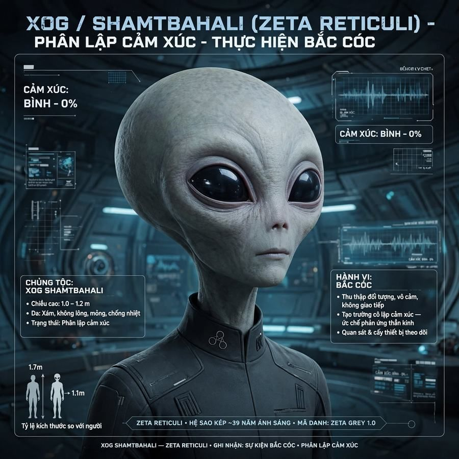
Airk (Ophiuchus — Yed Prior)
- Hình dáng & Chiều cao: Cao 1,2m; da xám.
- Đặc điểm Sinh học & Giác quan: Hoạt động về đêm.
- Đặc tính & Vai trò Thiên hà: Trung lập; dùng Trái Đất làm điểm dừng chân ngắn.
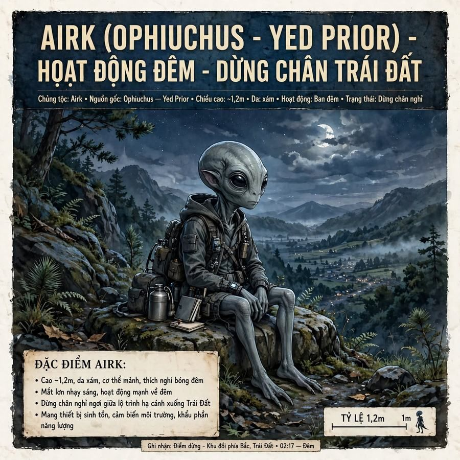
Zeta Saurian-Grey Clones (Hive Mind Clones)
- Hình dáng & Chiều cao: Cao 1,0m – 1,2m; da xám tổng hợp.
- Đặc điểm Sinh học & Giác quan: Không có linh hồn, vận hành bằng sóng vô hướng máy tính trung tâm.
- Đặc tính & Vai trò Thiên hà: Robot sinh học phục vụ bắt cóc.
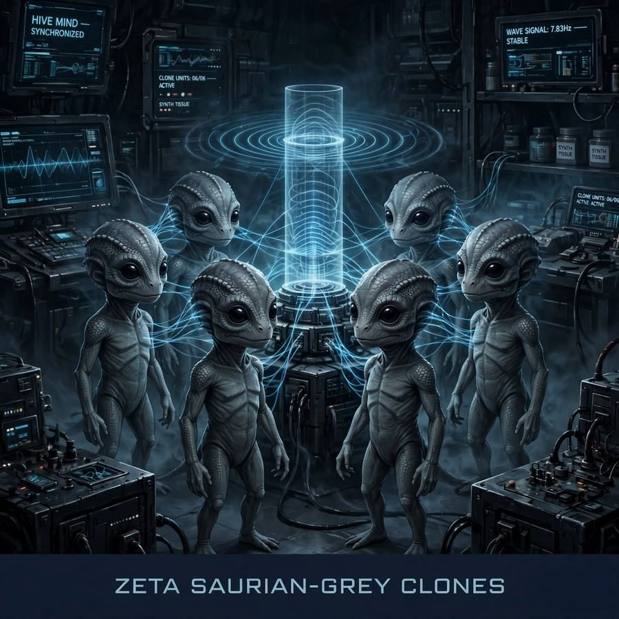